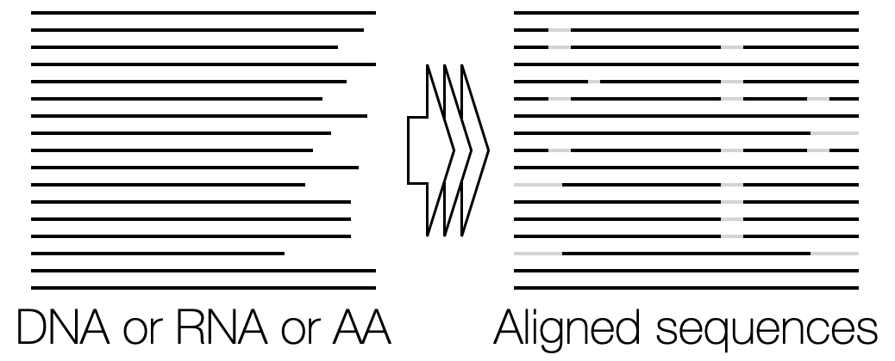
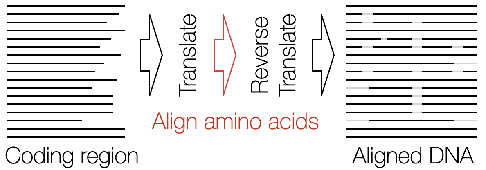
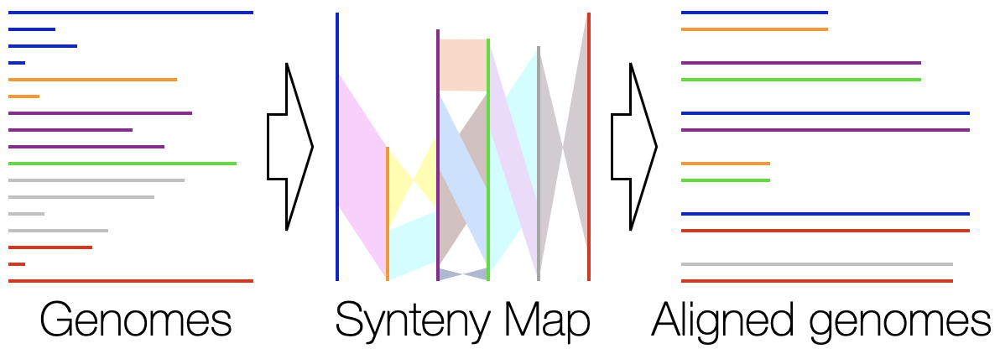
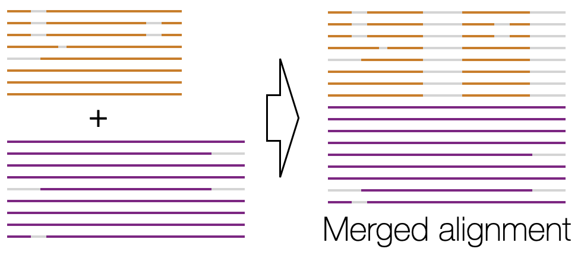
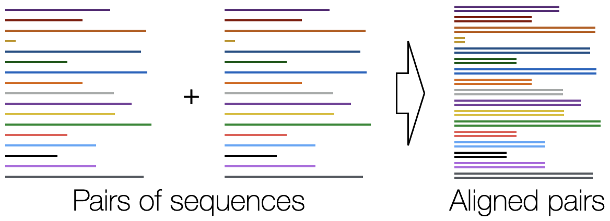

Alignment Overview
DECIPHER is excellent at quickly aligning thousands of input sequences while maintaining high accuracy. The examples below illustrate how to obtain accuracy and scalability for a variety of common alignment scenarios.Why use DECIPHER for alignment?
- AlignSeqs was the best out of 30 aligners on the extensive QuantTest2 protein benchmark.
- AlignSeqs was one of the most scalable and accurate aligners on the RNAconTest ncRNA benchmark.
- DECIPHER's multiple sequence alignment functions maintain accuracy better than other programs for larger numbers of input sequences.
- DECIPHER uses secondary structure to improve alignment accuracy.
- AlignTranslation makes it easy to accurately align protein coding (nucleotide) sequences.
- AlignSynteny can align the syntenic regions of whole genomes.
- All alignment functions are fast and scalable thanks to their use of anchoring and adaptive banding.
Align Sequences - Accurately align thousands of unaligned DNA, RNA, or amino acid (AA) sequences.

Align Translation - Using a set of protein coding sequences, create a nucleotide or amino acid alignment by aligning their corresponding proteins.

Align Synteny - Beginning from completed or draft genomes, find shared syntenic regions and align them quickly while accounting for inversions, rearrangements, and duplications.

Align Profiles - Efficiently create a merged alignment from two sub-alignments that may contain millions of sequences.

Align Pairs - Rapidly align pairs of nucleotide or amino acid sequences.
